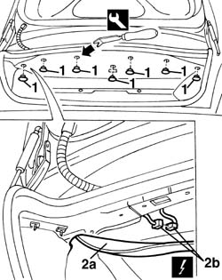
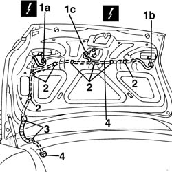

5505B50 boot wiring - r r
- Path
- Procedures > 55 ELECTRICAL EQUIPMENT > 5505 ELECTRICAL CIRCUIT FOR INSTRUMENTS/INDICATORS > 5505B door,boot and bonnet wiring. > 5505B50 boot wiring - r r
- Kind
- repair procedure (removal / refitting; the operation number is the code)
- Applies to
- all engines; all production periods
- Interactive page
- https://sloeber94.github.io/elrnDB-a156/en/#/3238388
Applies to: all engines; all production periods
 Removing
Removing
 Refitting
Refitting1. Release by proper tool rear stop pins of boot covering.
 | Name | Country |
|---|---|---|
1 | Scraper blade | 1.823.015.000 |
2. Lower higher covering (2a) and disconnect electric connection (2b) of boot wiring.
 | Name | Connector |
|---|---|---|
2b | Boot / rear coupling |

Applies to: all engines; all production periods
1. DIsconnect electric connections (1a,1b,1c).
| Name | Connector |
|---|---|---|
1a | Left rear. light cluster on (moving section of boot) |
| Name | Connector |
|---|---|---|
1b | Rear lights cluster right (moving part on boot lid) |
| Name | Connector |
|---|---|---|
1c | Boot opening switch |
2. Extract wiring stop springs.
3. Extract fairlead sleeve by both sides.
4. Extract wiring from boot cap.

Applies to: all engines; all production periods
Refitting
RemovingCheck wiring is not damaged and each single conductor is properly anchored to connections.
Insert wiring in boot cap.
Put wiring stop springs on.
Connect electric connections.
Test functionality of connected electric components.
Bind higher covering rear stop pins.
Topics linked from this page (4)
- D40 Boot / rear coupling
- F35 Left rear. light cluster on (moving section of boot)
- F36 Rear lights cluster right (moving part on boot lid)
- I11 Boot opening switch ( LEFT TAILGATE )